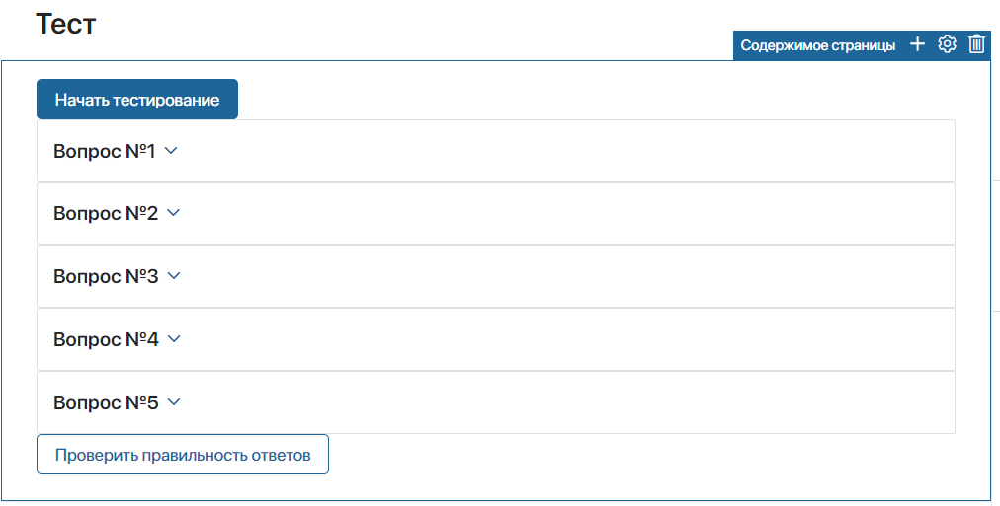
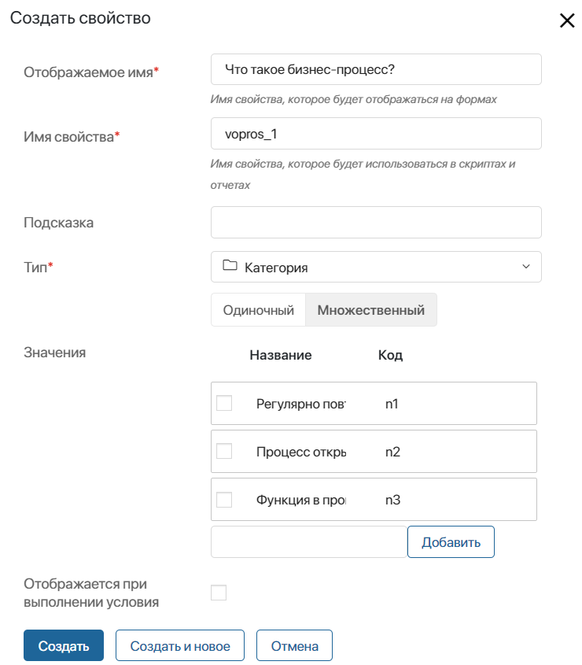
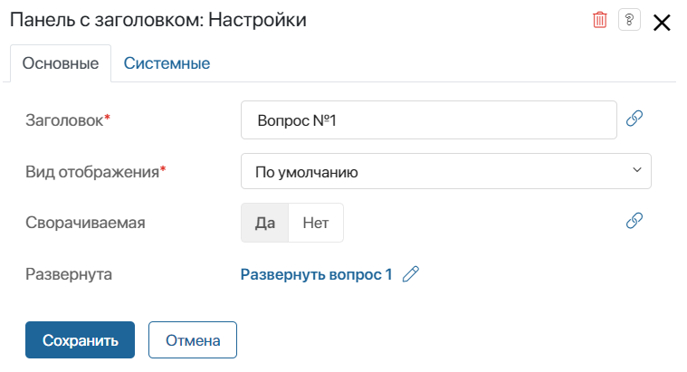
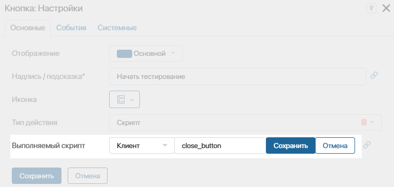
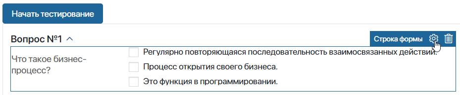
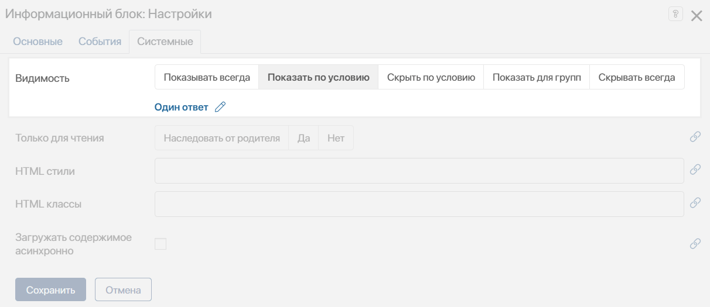
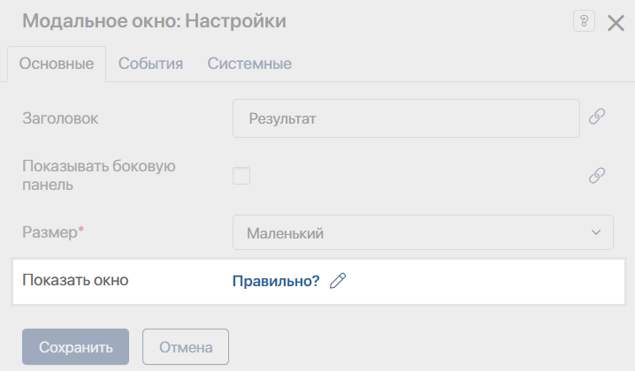

Виджеты удобно использовать при настройке динамических форм, например, если отображение информации на форме или странице зависит от каких-либо условий.
Рассмотрим использование скриптов в виджетах на примере страницы, на которой расположен тест из нескольких вопросов. Настроим разворачивающиеся панели, в которых находятся вопросы, информационный блок, а также модальное окно с результатами теста.

Создание теста
Для начала создайте вопросы с вариантами ответов для тестирования:
- Откройте страницу и перейдите в дизайнер интерфейсов.
- На вкладке Контекст создайте переменную типа Категория и задайте следующие параметры:
- Отображаемое имя* — введите вопрос, который будет отображаться на странице;
- Имя свойства* — измените автоматически заданное название свойства на
vopros_1; - Тип* — выберите тип Категория с возможностью выбора нескольких вариантов ответа;
- Значения — введите варианты ответов на вопрос. Измените код каждого ответа на
n1,n2иn3и нажмите Создать.

- Таким же образом создайте несколько вопросов.
Разворачивающаяся панель
После создания теста сделаем так, чтобы по умолчанию все вопросы на странице были свёрнуты, а при нажатии Начать тестирование раскрывался первый вопрос. Для этого:
- В дизайнере интерфейсов на вкладке Контекст создайте переменную Развернуть вопрос 1
(razvernut_vopros_1)с типом Выбор «да/нет». - Добавьте на поле для моделирования виджет Панель с заголовком.
- В открывшемся окне настроек задайте параметры:
- Заголовок* — введите название панели Вопрос №1;
- Сворачиваемая — выберите Да;
- Развернута — укажите созданную на шаге 1 переменную Развернуть вопрос 1. С помощью этой переменной панель будет разворачиваться при нажатии кнопки, которая добавляется далее.

- Нажмите кнопку Сохранить.
- Добавьте на поле для моделирования виджет Кнопка.
- В открывшемся окне настроек задайте параметры:
- Надпись/Подсказка* — введите название кнопки Начать тестирование;
- Выполняемый скрипт — добавьте скрипт, который будет изменять значение переменной Развернуть вопрос 1
(razvernut_vopros_1)на true. Для этого нажмите кнопку Создать, укажите название функции close_button, выберите Сохранить, а затем — Открыть.

На открывшейся вкладке Скрипты пропишите в созданной функции следующий код:
async function close_button(): Promise<void>{
Context.data.razvernut_vopros_1 = true
}
- Сохраните настройки.
- Разместите внутри виджета Панель с заголовком созданное ранее свойство типа Категория, содержащее первый вопрос. Для этого в правой панели дизайнера интерфейса выберите вкладку Свойства и перетащите поле в виджет. На странице свойство будет отображаться в виде виджета Строка формы.

- Добавьте на поле для моделирования столько панелей с заголовком, сколько у вас создано вопросов. Задайте название для каждой панели и в поле Сворачиваемая выберите Да. В поле Развернута укажите Нет. Поместите свойства с вопросами в панели.
- Сохраните и опубликуйте внесённые изменения.
После этого все вопросы на странице будут отображаться в свёрнутом виде, а при нажатии кнопки Начать тестирование первый вопрос будет автоматически раскрываться.
Информационный блок
Предположим, что в каждом вопросе может быть только один вариант ответа. Если пользователь отметил несколько ответов, на форме отобразится виджет Информационный блок с предупреждением. При наведении курсора блок исчезнет.
Для этого выполните следующие действия:
- В дизайнере интерфейсов на вкладке Контекст создайте переменную Один ответ
(odin_otvet)с типом Выбор «да/нет». - Добавьте на поле для моделирования виджет Информационный блок. В открывшемся окне настроек перейдите на вкладку Системные в поле Видимость выберите опцию Показать по условию. Затем укажите переменную Один ответ. Отображение информационного блока будет зависеть от значения этой переменной.

- Настройте проверку количества выбранных ответов. Для этого:
- выделите виджет Строка формы, содержащий первый вопрос, и откройте его настройки, нажав на значок шестерёнки:
- перейдите на вкладку События и добавьте скрипт, который будет проверять количество выбранных ответов и изменять значение переменной Один ответ. Для этого в опции Событие при изменении значения нажмите кнопку Создать, введите название функции proverka, выберите Сохранить, а затем — Открыть;
- на открывшейся вкладке Скрипты укажите код, который будет определять значение переменной Один ответ
(odin_otvet):
async function proverka(): Promise<void> {
if (Context.data.vopros_1 && Context.data.vopros_1.length > 1) {
Context.data.odin_otvet = true
} else {
Context.data.odin_otvet = false;
}
}
- В настройках виджета Информационный блок в поле Событие при наведении курсора добавьте скрипт, который будет изменять значение переменной Один ответ
(odin_otvet)на false:
async function closeBlock(): Promise<void> {
Context.data.odin_otvet = false
}
- Сохраните и опубликуйте внесённые изменения.
Всплывающее окно
Завершив тестирование, пользователь нажмёт кнопку Проверить правильность результатов. После этого на странице отобразится всплывающее окно с результатом теста.
Для этого:
- В дизайнере интерфейсов на вкладке Контекст создайте переменную Правильно
(pravilno)с типом Выбор «да/нет». В ней будет храниться результат выполнения теста. - Добавьте на поле для моделирования виджет Модальное окно.
- В настройках виджета в поле Показать окно укажите переменную, созданную на шаге 1. Отображение модального окна будет зависеть от значения этой переменной.

- Добавьте на поле для моделирования виджет Кнопка.
- В настройках кнопки в поле Выполняемый скрипт добавьте код, который будет определять правильность выбранных ответов и изменять значение переменной Правильно
(pravilno)на true:
async function resultTest(): Promise<void> {
if (Context.data.vopros_1 && Context.data.vopros_1.length == 1) {
for (let i of Context.data.vopros_1) {
if (i.code == "n1") {
Context.data.pravilno = true;
}
else {
Context.data.pravilno = false;
}
}
}
else {
Context.data.pravilno = false;
}
}
- Сохраните и опубликуйте внесённые изменения.